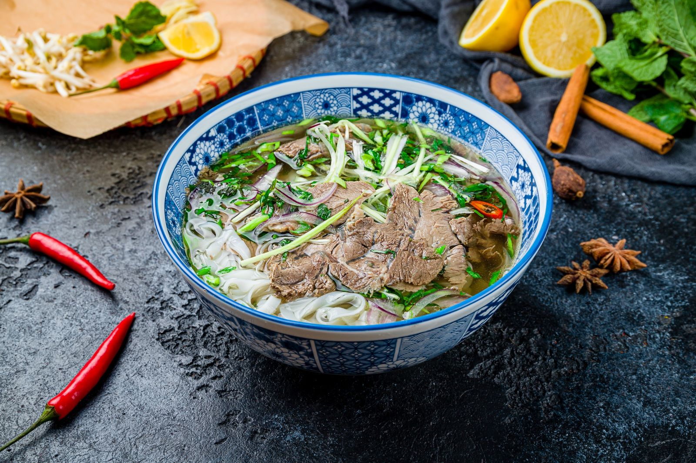

Фо Бо (суп с говядиной)

🌟 Совет шефа: Секрет настоящего Фо Бо — в бульоне. Его нужно варить минимум 3 часа, чтобы получить тот самый насыщенный вкус.
Ингредиенты:
Для бульона:
- Говядина на кости — 500 г
- Лук репчатый — 1 шт
- Имбирь — кусочек 5 см
- Звездчатый анис (бадьян) — 2 шт
- Корица — 1 палочка
- Кардамон — 2 коробочки
- Рыбный соус — 3 ст.л.
- Сахар — 1 ст.л.
- Соль — по вкусу
Для подачи:
- Рисовая лапша — 200 г
- Говяжья вырезка (сырая) — 150 г
- Лук зеленый — пучок
- Кинза — пучок
- Ростки сои — 100 г
- Лайм — 1 шт
- Перец чили — по вкусу
- Соус хойсин — для подачи
Приготовление:
- Подготовка костей: Промойте говядину на кости, залейте холодной водой и доведите до кипения. Слейте первую воду, промойте кости — это сделает бульон прозрачным.
- Варка бульона: Залейте кости чистой водой (2-2.5 литра), доведите до кипения, снимите пену. Варите на медленном огне 2-3 часа.
- Обжарка специй: Лук и имбирь разрежьте пополам и обжарьте на сухой сковороде до черноты. Анис, корицу и кардамон тоже слегка прогрейте на сковороде (30 секунд).
- Ароматизация: Добавьте обжаренные лук, имбирь и специи в бульон за 30 минут до окончания варки.
- Приправы: Влейте рыбный соус, добавьте сахар и соль. Процедите бульон.
- Лапша: Отварите рисовую лапшу согласно инструкции (обычно 3-5 минут), промойте холодной водой.
- Подготовка мяса: Заморозьте немного вырезку, чтобы тонко нарезать сырое мясо (оно сварится прямо в тарелке от горячего бульона).
- Сборка: В глубокую тарелку положите лапшу, сверху тонкие ломтики сырой говядины, залейте кипящим бульоном.
- Подача: Посыпьте зеленым луком и кинзой. Отдельно подайте ростки сои, дольки лайма, нарезанный чили и соус хойсин.
Пищевая ценность (на порцию):
Калории: ~450 ккал | Белки: 35 г | Жиры: 15 г | Углеводы: 45 г